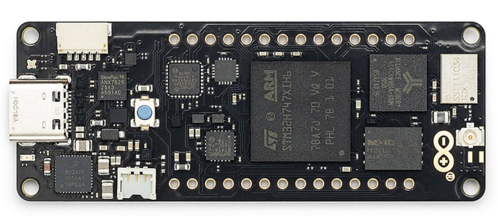
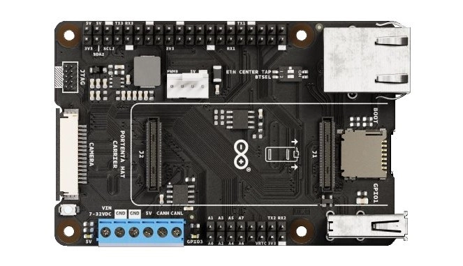

Arduino Portenta H7
The Arduino Portenta H7 is a dual-core STM32H747 board. Juno targets its Cortex-M7 core through Arduino's Mbed Portenta core, and the Cortex-M4 runs Java threads too, as a second carrier. The M7 runs at up to 480 MHz and has a double-precision floating-point unit, while the board provides 2 MB of internal flash, 1 MB of internal RAM, external flash and SDRAM, Wi-Fi, Bluetooth, Ethernet and a built-in RGB LED.

Core specification
| Characteristic | Portenta H7 |
|---|---|
| Main microcontroller | STMicroelectronics STM32H747XI |
| Juno target core | 32-bit Arm Cortex-M7 at 480 MHz |
| Companion core | Arm Cortex-M4 at 240 MHz: a second carrier for Java threads |
| Program flash | 2 MB internal, plus 16 MB NOR flash |
| SRAM | 1 MB internal, plus 8 MB SDRAM |
| Logic and operating voltage | 3.3 V |
| USB connector | USB-C |
| Built-in RGB LED | Arduino pin 24 (LED_BUILTIN) |
| Wireless connectivity | 2.4 GHz Wi-Fi and Bluetooth Low Energy |
| Ethernet | 10/100 Mbps through the onboard Ethernet interface |
| Secure element | NXP SE050C2, read through SecretStore |
| Arduino CLI FQBN | arduino:mbed_portenta:envie_m7 |
| Juno board id | arduino-portenta-h7 |
What Juno supports
| Feature | Status | Notes | Example |
|---|---|---|---|
Gpio, DigitalOutput, analog input |
✓ | D0–D13 and A0–A5 use the Portenta M7 pin context; A0–A5 map to Arduino pins 15–20. |
Blink |
| Built-in RGB LED | ✓ | The Portenta variant exposes LED_BUILTIN as Arduino pin 24. |
Blink |
Delay, Clock, Serial |
✓ | Serial output uses the native USB connection. | |
BigInteger, BigDecimal, MathContext |
✓ | Runs in Juno's fixed arena. | BigNumberValues |
| Objects, arrays, inheritance, static and interface calls | ✓ | ||
| Wi-Fi station and access-point modes | ✓ | Uses the Mbed core's WiFi.h transport, including the Portenta-specific beginAP(ssid, password) overload. |
WifiStatus |
| HTTP and HTTPS client/server | ✓ | Plain HTTP uses the Mbed Wi-Fi sockets; HTTPS clients use WiFiSSLClient, and the HTTPS server uses the core's bundled mbedTLS. Confirmed on hardware: the HTTP and HTTPS clients, a plain HTTP server on port 80 through the JDK com.sun.net.httpserver API, with Wi-Fi credentials from the SE050C2 secret store and the Hat Carrier's MHS-3.5 TFT as its LED (PortentaHttpServer). The Mailbox serves HTTPS through the JDK HttpsServer, with its certificate and key on the Hat Carrier's microSD card. |
HttpsMethods |
| Email over TLS and STARTTLS | ✓ | Smtp.send upgrades a TCP socket to TLS with Mbed's TLSSocketWrapper and checks the server certificate against the bundled Mozilla roots; Smtp.sendTls and Pop3Client use the Portenta's TLS client. Credentials come from SecretStore. Confirmed on hardware: STARTTLS on port 587, implicit TLS on port 465 and POP3 on port 995. |
PortentaEmailSmoke |
| Bluetooth LE | ✓ | Uses the ArduinoBLE library for the Powered Up central runtime. | PoweredUpHubHello |
Double-precision java.lang.Math |
✓ | The M7's floating-point toolchain assembles Juno's double runtime. | MathFunctionsDoublePrecision |
| Threads, locks, structured concurrency and scoped values | ✓ | Uses the Portenta Mbed RTOS carrier for Java threads, locks, structured task scopes and scoped-value bindings. Confirmed on hardware with soak programs that repeated their concurrent work every round. | ThreadStartAndJoin, Locks, StructuredRace, Synchronization |
| USB HID mouse | ✓ | Uses the Mbed core's USBMouse. |
RatonLoco |
| Watchdog | ✓ | Uses mbed::Watchdog behind @Watchdog. |
GcDemo |
| Cryptographic UUID | ✓ | Uses the Mbed hardware entropy provider behind UUID.randomUUID(). |
UuidValues |
SecretStore / SE050C2 |
✓ | The board's onboard NXP SE050C2 holds each name as a binary object; MCU.getSecretStore() picks that provider for this board, and the values are not embedded in firmware. Confirmed on hardware: writes, updates, per-name clears and the 63-byte maximum with SecretStoreCheck, a reboot that joins Wi-Fi from the stored credentials, and clearAll(), a whole-chip wipe that erases the Wi-Fi and SMTP credentials too, checked with SecretClearAllRead. |
SecretWifiStatus |
| Ethernet | — | The hardware has Ethernet, but Juno has no Ethernet API/capability yet. |
The Juno runtime emits a small C-linkage wrapper for the Mbed core's pinMode overload. This keeps generated
Thumb-2 assembly independent of C++ overload mangling while leaving the regular Arduino digitalWrite, analogRead
and delay calls on the core's native symbols. Optional networking, BLE, HID, watchdog, UUID and double-math helpers
are selected by reachability, so a GPIO-only sketch does not pull them into the image.
Wi-Fi with SecretStore
Provision the SE050C2 with wifi.ssid and wifi.password (see Secrets in a Secure
Element), then compile the example for Portenta:
./mvnw -f juno-examples/pom.xml compile juno:verify \
-Djuno.main=io.github.jabrena.juno.api.hardware.security.SecretWifiStatus \
-Djuno.board=arduino-portenta-h7
The example reads both values from the secure element and prints only status, never the SSID or password. Flash it over
USB with -Djuno.port=<serial-port> and follow with juno:monitor -Djuno.baudRate=115200.
Features
These examples need only a Portenta H7 and its USB-C cable.
Blink the built-in RGB LED
Blink uses MCU.getGpio().getBuiltinLed(), so the same Java program can run on the Portenta H7 and the other
supported Juno boards:
DigitalOutput led = DigitalOutput.of(MCU.getGpio().getBuiltinLed());
while (true) {
led.high();
Delay.millis(500);
led.low();
Delay.millis(500);
}
Build the generated sketch with the Portenta M7 target:
./mvnw -f juno-examples/pom.xml compile juno:verify \
-Djuno.main=io.github.jabrena.juno.api.hardware.gpio.Blink \
-Djuno.board=arduino-portenta-h7
Install the Mbed Portenta core once if needed:
arduino-cli core install arduino:mbed_portenta
Flash over USB serial by passing the Portenta's /dev/cu.* device to juno:flash:
./mvnw -f juno-examples/pom.xml compile juno:flash \
-Djuno.main=io.github.jabrena.juno.api.hardware.gpio.Blink \
-Djuno.board=arduino-portenta-h7 \
-Djuno.port=/dev/cu.usbmodem11201
The Portenta uploads with dfu-util, which stops with "More than one DFU capable USB device found" when another DFU
board is connected, a Nano ESP32 among them, since it offers DFU whenever it is plugged in. Name the Portenta by its USB
serial number to upload with both connected:
./mvnw -f juno-examples/pom.xml compile juno:flash \
-Djuno.main=io.github.jabrena.juno.api.hardware.gpio.Blink \
-Djuno.board=arduino-portenta-h7 \
-Djuno.port=/dev/cu.usbmodem11201 \
-Djuno.dfuSerial=<Portenta USB serial>
The Portenta H7 Blink path has been uploaded successfully to the M7 core. Blink does not print serial output; use
juno:monitor after upload when testing an example that calls Serial.begin(...).
Shields
Portenta Hat Carrier

The Arduino Portenta Hat Carrier (ASX00049) takes a Portenta H7 and adds a 40-pin Raspberry Pi header for HATs and a
microSD slot of its own. PortentaHatCarrier names the header pins and the slot, so a HAT's driver needs no hard-coded
numbers:
| Carrier part | Juno name | PortentaHatCarrier |
|---|---|---|
| Header pins 19, 21 and 23: SPI MOSI, MISO and SCLK | D8, D10 and D9 | The SPI bus, MCU.getSpi() |
| Header pin 24: SPI CE0 | D7 | getLcdChipSelect() |
| Header pin 18: data/command line | PI7 (raw index 161) | getLcdDataCommand() |
| Header pin 22: reset | D5 | getLcdReset() |
| Header pin 26: touch chip select | D4 | getTouchChipSelect() |
| microSD slot (J7) | SDMMC2 bus, no pin | getSdCard() |
The microSD slot is on the H7's SDMMC2 bus, not on SPI, so it does not share the header's SPI bus with a HAT display. The ASX00049 datasheet has the full pinout.
Features
Draw on the MHS-3.5 display
The MHS-3.5-inch display is a 480 × 320 TFT with an ILI9486 controller and a resistive XPT2046 touch panel. It is a HAT,
so it plugs onto the carrier's header. Mhs35TftDisplay takes the carrier and draws in RGB565 colors:
Mhs35TftDisplay tft = new Mhs35TftDisplay(new PortentaHatCarrier());
tft.setRotation(Mhs35TftDisplay.LANDSCAPE);
tft.fillScreen(Display.BLACK);
tft.setCursor(10, 10);
tft.setTextColor(Display.WHITE, Display.BLACK);
tft.print("Hello, Juno");
while (true) {
if (tft.readTouch()) {
tft.fillCircle(tft.touchX(), tft.touchY(), 3, Display.WHITE);
}
}
The display is write-only: it cannot be read back, and its backlight stays on whenever the board has power. Create one instance at startup and reuse it.